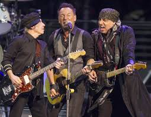
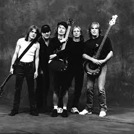
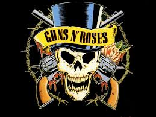

Mathematics, Economics, Bussiness.....Web Development
|  |
E Street BandThe E Street Band is an American rock band, and has been musician Bruce Springsteen's primary backing band since 1972. The band was inducted into the Rock and Roll Hall of Fame in 2014. |
|  |
AC DCAC/DC are an Australian rock band, formed in Sydney in 1973 by brothers Malcolm and Angus Young. A hard rock/blues rock band, their music has also been called heavy metal, although they refer to themselves as "a rock and roll band, nothing more, nothing less". |
|  |
Guns N' RosesGuns N' Roses, often abbreviated as GNR, is an American hard rock band from Los Angeles, California, formed in 1985. The lineup, when first signed to Geffen Records in 1986, consisted of vocalist Axl Rose, lead guitarist Slash, rhythm guitarist Izzy Stradlin, bassist Duff McKagan, and drummer Steven Adler. Guns N' Roses has released six studio albums, accumulating sales of more than 100 million records worldwide, including 45 million in the United States, making them the 41st best-selling artist of all time. |